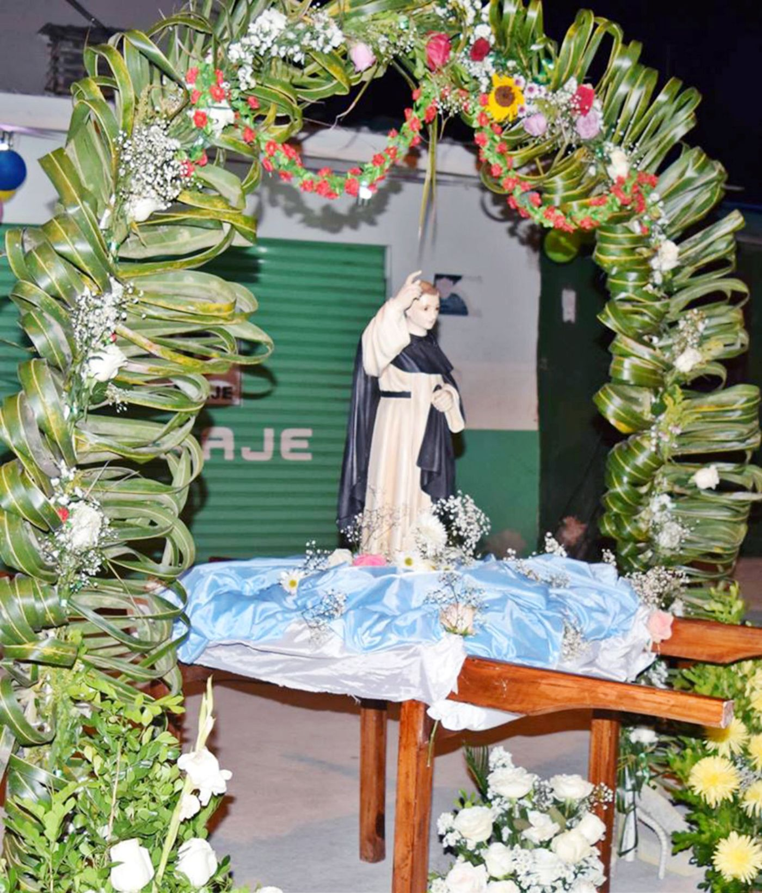
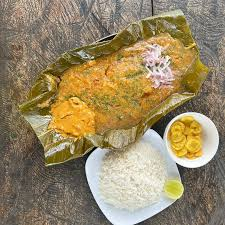
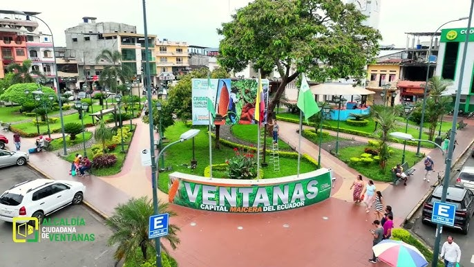

Celebraciones cívicas y patronales
Se celebran con desfiles escolares, bandas musicales, ferias artesanales y eventos artísticos en parques y plazas.

Patrono de la ciudad. Se organizan misas, procesiones, novenas y juegos populares.
Comida típica
Guatita (maní con mondongo).
Seco de pollo.
Caldo de bagre.
Bollo de pescado.
Jugos naturales de frutas tropicales.
Los fines de semana es tradición ir en familia a desayunar fuera o visitar las cafeterías del centro.
En la ciudad es muy común comer en carretillas o huecas locales.
Reuniones familiares y sociales
Las familias suelen reunirse los domingos o feriados en el parque central o el malecón.
Los vecinos organizan bailes con música costeña, especialmente en fechas especiales.
Juegos tradicionales